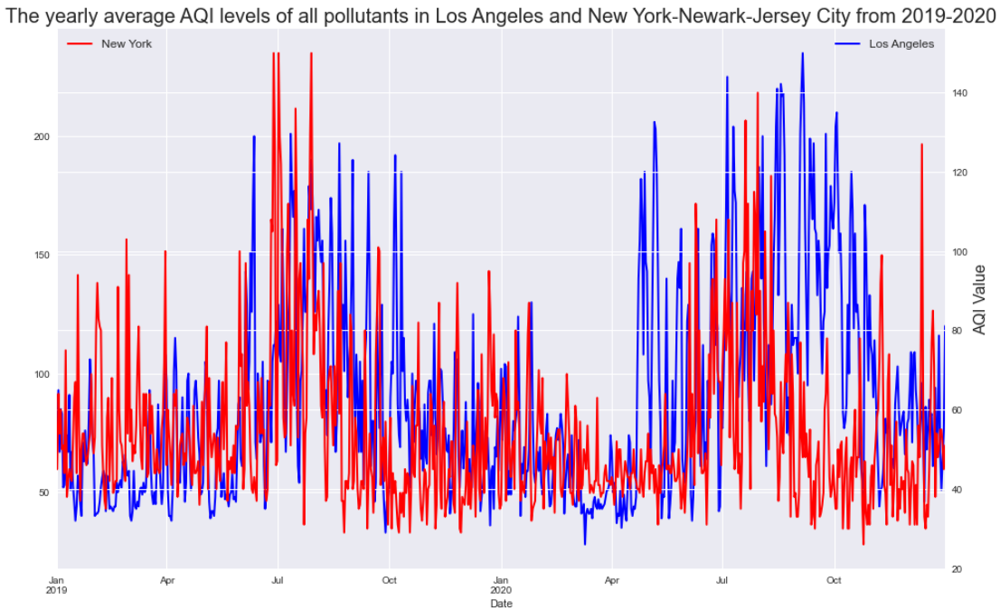

Tree Cover, Green Space and Air Quality Correlation to Acute Respiratory Illnesses in Los Angeles, New York, and Tampa
Using data from AirNow.gov, U.S. EPA and EnviroAtlas, I did an analysis on Air Quality Index, tree cover percentage, and green space percentage for four U.S. cities (Cleveland, Los Angeles, New York, and Tampa).
This project contains data from January 2019-December 2020 and January 2020-December 2021. The objective is to find the correlation between pollution and acute respiratory illnesses and green
space/tree cover and acute respiratory illnesses. Parameter for main pollutant was PM2.5, and I did a comparison of yearly average AQI levels from January 2019 to December 2020 and from January 2020 to December 2021,
first via all cities and then a two-cities comparison.In the 2019-2020 data, Los Angeles-Long Beach-Anaheim had the highest PM2.5 levels (average = 90.2), with seasonal peaks around late spring to early fall. In second place was New York-Newark-Jersey City (average = 54.8),
with peaks around summer, and third and fourth place respectively were Cleveland-Elyria (average = 51.9) and Tampa (average = 46.6).In the 2020-2021 data, Los Angeles-Long Beach-Anaheim had the highest PM2.5 levels (average = 66.8), with seasonal peaks around early fall to early early winter. In second place was Cleveland (average = 46.2) with peaks
fall and spring to summer. In third and fourth place respectively were York-Newark-Jersey City (average = 44.8) and Tampa (average = 40.6).From the two-cities comparison, starting with Tampa, FL and Cleveland, OH, in the 2019-2020 data Tampa exhibited a deviation from the low AQI levels around March to May 2019 and April to June 2020, with higher
AQI levels around 146. For Cleveland-Elyria, PM2.5 AQI levels peaked late July to early September 2019 and July to September 2020 (highest levels around 120). In the 2020-2021 data, Tampa PM2.5 levels were highest during
January, late April to early May, July, and September 2020 and June, July, and September 2021.In the Los Angeles-Long Beach-Anaheim and York-Newark-Jersey comparison, in 2019-2020 Los Angeles-Long Beach-Anaheim's PM2.5 levels were highest July and September 2019 and in 2020-2021 levels were highest between July to
September 2020 and late November 2021.
